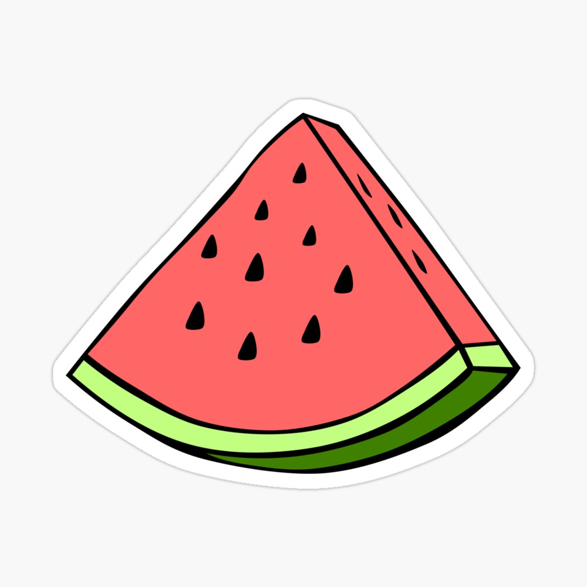
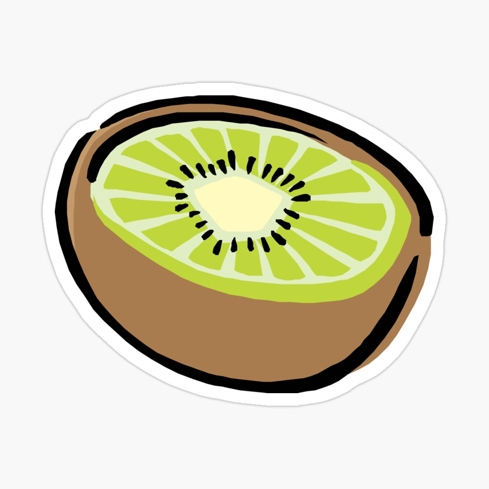

1. What are the obligatory elements in each (X)HTML document?
A (X)HTML <!DOCTYPE HTML> declaration, <html>, <head>, <title>
and <body> also should be present.
2. What's DOCTYPE declaration meant for?
Is an instruction that tells the web browser about the markup language in which the
current page is written.
3. What is an URL? Give examples both of use of absolute and relative URLs
4. How is it possible to define the text visible on the top of a browsers
window and/or on a tab? How about adding an
icon next to the title? Give examples.
Both are to be defined inside the <head> block, adding the <title > will give
the name to the tab and with a <link> for a favicon.
5. How do block - level and inline level elements differ from each other? Give Examples
Block level takes one whole line of space no matter who large it is that inside,
and inline level takes online necessary space.
6. Find out a piece of Java code and make it appear on your web page the same way it
appears in a text editor
var rows = prompt("How many rows for your multiplication table?");
var cols = prompt("How many columns for your multiplication table?");
if(rows == "" || rows == null)
rows = 10;
if(cols== "" || cols== null)
cols = 10;
createTable(rows, cols);
7. There are three different ways of adding CSS styles on an (X)HTML page. How?
What are the benefits of each way?
Inline style: style declarations can be associated with elements by using a style
attribute.
Embedded style sheet: is written inside the style element, which is inside
the head element. It needs to have an attribute type which should have the value "text/css"
External style sheet: is linked to the html file using the link element inside the
head element. This is easier to use when it comes down to making changes in the file.
8. How to create a nested list looking more or less as follows:
- Banana
- Apple
a) Pinja
b) Samo
- Orange
- 
- 
9. What are selectors in CSS? Give at least five examples of different kind of
selectors (basic type selectors, class, id, and attribute selectors). Show them in
use on your (X)HTML page.
Important!!
10.
{kind=link}